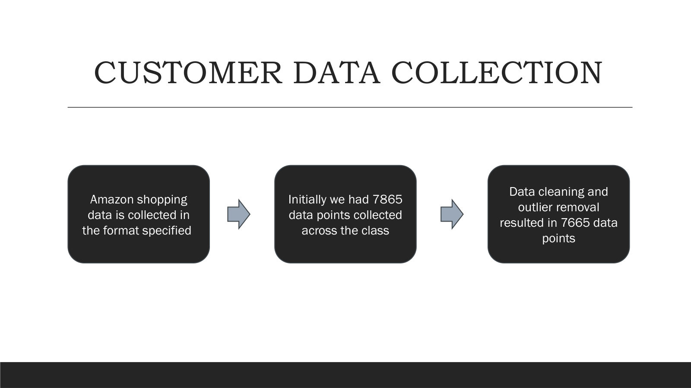
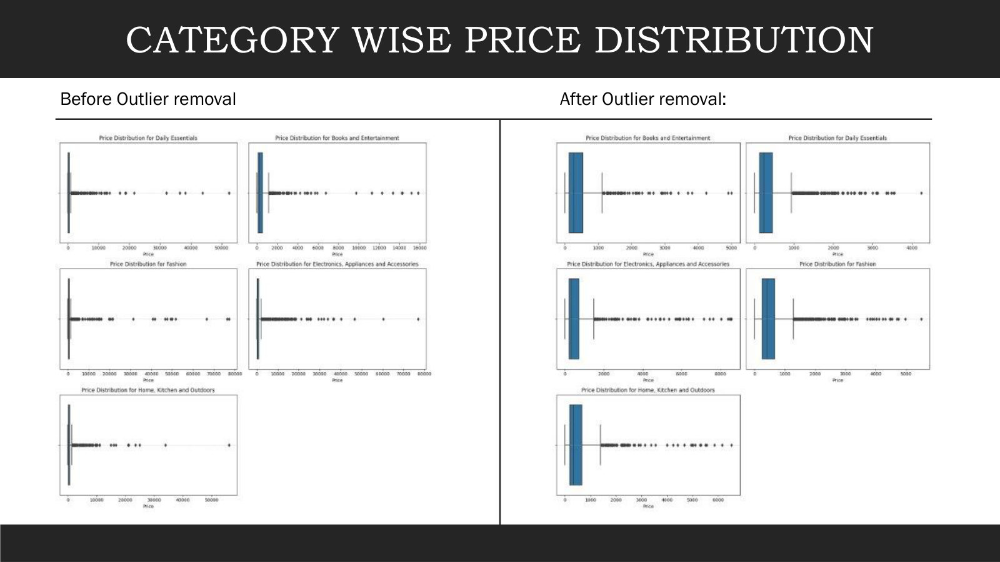

Raw, the set held 7,865 orders. After trimming extreme outliers, 7,665 remained — a clean core every later test could trust.

7,665
orders survived cleaning — the analysis base for everything that follows.
~200
extreme outliers removed, so a handful of orders couldn't distort the means.
6
fields per order — price, quantity, age, gender, state, city.